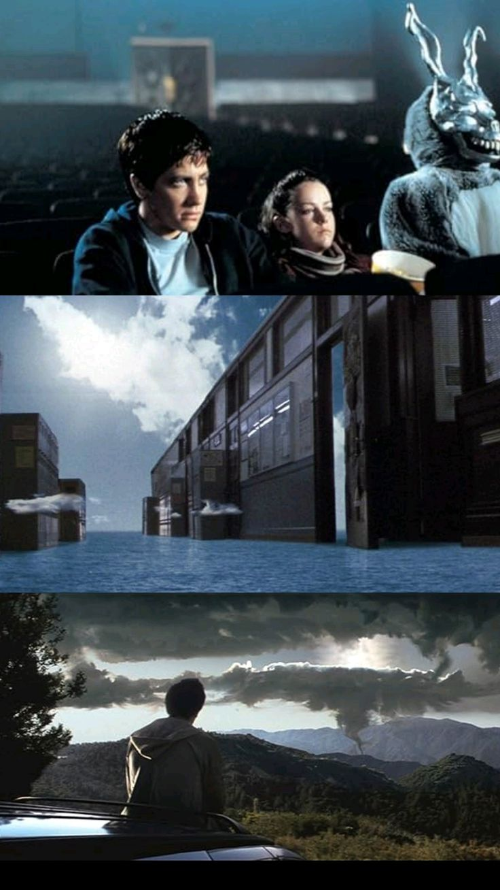

ANÁLISIS Y SIMBOLISMO EN DONNIE DARKO
La figura del héroe trágico
Donnie Darko puede interpretarse como una figura de héroe trágico moderno. A través de una narrativa compleja, la película lo coloca en una lucha contra el destino y el tiempo, mientras lidia con su salud mental y la presión del entorno. Su sacrificio final refuerza su rol como redentor silencioso en un mundo que no lo comprende.
El conejo como guía entre mundos
Frank, el conejo, representa un puente entre lo real y lo metafísico. Su figura mezcla lo absurdo con lo macabro: un disfraz infantil convertido en mensajero apocalíptico. Su aparición marca momentos clave de cambio y decisión, funcionando como una manifestación del destino.
Religión, tiempo y muerte
A lo largo del film, se presentan temas como el libre albedrío, la predestinación y la fe. Donnie cuestiona a su entorno, a Dios y a sí mismo, mientras se enfrenta a una realidad que parece estar escrita. Las conversaciones con su profesora de filosofía, el libro de Roberta Sparrow y las visiones del futuro lo sitúan como alguien que transita entre la razón y lo divino.
